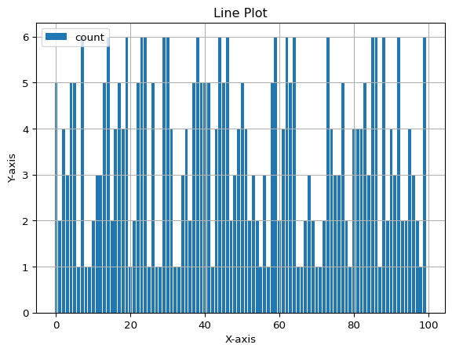
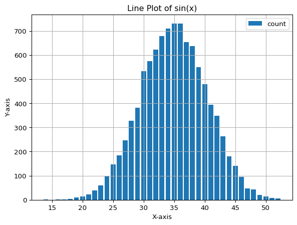

Lihat kode
import random
[random.choice(["H","T"]) for _ in range(20)]['T',
'H',
'H',
'H',
'H',
'H',
'T',
'T',
'H',
'T',
'H',
'H',
'H',
'T',
'H',
'T',
'H',
'T',
'H',
'T']Understanding Probabilistic Way of Thinking versus Deterministic Way of Thinking

Minggu 1: Fondasi Berpikir Probabilistik dalam Sistem Informasi
Tema: “Breaking the Deterministic Mindset: Why Average is a Lie”
Fokus: Mengubah pola pikir dari “pasti” (deterministik) menjadi “mungkin” (probabilistik) melalui studi kasus nyata.
Fokus: Hands-on Python untuk membuktikan intuisi Senin.
random vs numpy. Pentingnya random.seed() untuk reproduktifitas.1. Konsep Dasar * Deterministik vs Stokastik: Deterministik adalah sebab-akibat pasti (Input A \(\to\) Output B), contoh: 1 + 1 = 2. Stokastik mengandung elemen acak, contoh: Waktu kedatangan paket data di router. * Ruang Sampel (\(\Omega\)): Himpunan seluruh kemungkinan hasil. Dalam load testing, \(\Omega\) bisa berupa {Sukses, Timeout, Error 500}. * Hukum Bilangan Besar (LLN): Jaminan matematis bahwa rata-rata sampel empiris akan mendekati rata-rata teoretis seiring bertambahnya jumlah percobaan.
2. Aplikasi Sistem Informasi * Reliabilitas Infrastruktur: Menghitung risiko kegagalan. Kegagalan dua server cadangan tidak selalu independen (misal: mati listrik satu gedung mematikan keduanya). * Kualitas Layanan (QoS): Probabilitas digunakan untuk menentukan bandwidth minimum agar video streaming tidak buffering bagi 99% user.
3. Komputasi (Python) * Generasi Angka Acak: Menggunakan numpy.random untuk memodelkan ketidakpastian. * Simulasi Monte Carlo: Metode komputasi untuk menaksir probabilitas dengan melakukan ribuan percobaan acak.
Judul: Week 1 Mission: Simulating Reliability & Risk
Deskripsi: Mahasiswa diberikan starter notebook yang berisi skenario sistem Disaster Recovery. Mereka harus melengkapi kode untuk mensimulasikan kegagalan server dan menjawab pertanyaan bisnis.
Soal Python: 1. Buat fungsi simulate_server_uptime(days, prob_failure) yang mengembalikan status server (Up/Down) selama n-hari. 2. Simulasikan dua server (Server A dan B) yang bekerja paralel. Sistem Down hanya jika keduanya Down. 3. Bandingkan: Berapa hari sistem Down jika menggunakan 1 server vs 2 server? 4. Analisis: Jika biaya server ke-2 adalah $100/hari dan biaya sistem Down adalah $5000/hari, apakah worth it menyewa server ke-2? (Jawab dengan grafik profit/loss).
Submission: Push .ipynb ke repo GitHub Classroom. Penilaian otomatis via GitHub Actions untuk kelengkapan kode, penilaian manual untuk analisis keputusan.
Berikut adalah 15 soal yang diambil dari Bank Soal Mingguan (Minggu 01) dalam dokumen “Desain Kurikulum Statistika Generasi Z”-, beserta solusinya.
1. Soal: Jelaskan perbedaan mendasar antara fenomena deterministik (seperti operasi penjumlahan di CPU) dan fenomena probabilistik (seperti waktu kedatangan paket di router). * Solusi: Fenomena deterministik selalu menghasilkan output yang sama untuk input dan kondisi awal yang sama (kepastian mutlak). Fenomena probabilistik memiliki variasi inheren di mana input yang sama bisa menghasilkan output berbeda, sehingga hanya bisa diprediksi pola atau peluangnya, bukan hasil pastinya.
2. Soal: Mengapa pendekatan Frequentist memerlukan asumsi pengulangan eksperimen dalam kondisi yang identik? * Solusi: Karena pendekatan Frequentist mendefinisikan probabilitas sebagai limit dari frekuensi relatif (\(n/N\)) saat jumlah percobaan (\(N\)) mendekati tak hingga. Tanpa pengulangan kondisi identik, frekuensi relatif tidak akan konvergen ke nilai yang bermakna.
3. Soal: Definisikan ruang sampel dalam konteks pengujian beban (load testing) sebuah situs web e-commerce. * Solusi: Ruang sampel adalah himpunan semua kemungkinan status respons server terhadap satu request. Contoh: \(\Omega = \{ \text{HTTP 200 OK}, \text{HTTP 404 Not Found}, \text{HTTP 500 Server Error}, \text{Timeout} \}\).
4. Soal: Apa yang dimaksud dengan interpretasi probabilitas subjektif (Bayesian) dan bagaimana relevansinya dalam pengambilan keputusan manajerial? * Solusi: Probabilitas subjektif adalah ukuran “derajat keyakinan” seseorang berdasarkan informasi yang tersedia saat ini (bukan frekuensi fisik). Ini relevan bagi manajer untuk mengambil keputusan pada kejadian yang tidak berulang (misal: “Peluang sukses peluncuran produk baru”) di mana data historis mungkin tidak ada.
5. Soal: Jelaskan peran hukum bilangan besar (Law of Large Numbers) dalam validasi simulasi sistem. * Solusi: LLN menjamin bahwa hasil simulasi rata-rata (empiris) akan mendekati nilai ekspektasi teoretis sistem jika simulasi dijalankan cukup lama/banyak. Ini memvalidasi bahwa hasil simulasi komputer merepresentasikan perilaku sistem yang sebenarnya.
6. Soal: Sebuah sistem Disaster Recovery Center (DRC) memiliki dua server cadangan. Jika probabilitas satu server gagal adalah 0,05, jelaskan mengapa kegagalan keduanya tidak selalu 0,0025 dalam kondisi nyata. * Solusi: Angka 0,0025 (\(0,05 \times 0,05\)) hanya berlaku jika kegagalan kedua server independen. Dalam dunia nyata, sering terjadi Common Cause Failure (misal: pemadaman listrik satu gedung, banjir, atau bug software yang sama) yang membuat keduanya gagal bersamaan, sehingga probabilitasnya > 0,0025.
7. Soal: Analisis bagaimana fluktuasi jumlah pengguna aktif di platform media sosial dapat dimodelkan sebagai proses stokastik. * Solusi: Jumlah pengguna tidak konstan tetapi berubah terhadap waktu secara acak. Ini dapat dimodelkan sebagai proses stokastik (misalnya Proses Poisson untuk kedatangan pengguna baru) di mana variabel acak \(X(t)\) mewakili jumlah pengguna pada waktu \(t\).
8. Soal: Gunakan konsep probabilitas untuk mengevaluasi risiko kehilangan data pada media penyimpanan RAID 0 dibandingkan RAID 1. * Solusi: RAID 0 (Striping) gagal jika salah satu disk gagal (Sistem Seri, risiko tinggi). RAID 1 (Mirroring) gagal hanya jika semua disk gagal (Sistem Paralel, risiko rendah/redundansi). Probabilitas kehilangan data RAID 0 > RAID 1.
9. Soal: Jika sebuah algoritma enkripsi memiliki probabilitas tabrakan (collision) \(10^{-15}\), sejauh mana tingkat kepercayaan pengembang pada integritas data? * Solusi: Tingkat kepercayaan sangat tinggi (hampir absolut). Dalam skala probabilistik, \(10^{-15}\) dianggap sebagai kejadian yang secara praktis mustahil terjadi dalam operasional normal, memberikan jaminan integritas data yang kuat (“Probabilistic Guarantee”).
10. Soal: Bagaimana probabilitas digunakan dalam menentukan kapasitas bandwidth minimum untuk menjamin kualitas layanan (QoS) video streaming? * Solusi: Provider tidak menyediakan bandwidth untuk peak teoritis semua user (mahal), melainkan menggunakan probabilitas untuk menjamin (misalnya) 99.9% waktu, bandwidth cukup. Ini dihitung menggunakan distribusi beban user agar probabilitas congestion < 0.1%.
11. Soal: Tulis skrip Python untuk mensimulasikan 10.000 percobaan pelemparan koin tidak adil (\(p=0,6\)) dan plot konvergensi frekuensi relatifnya. * Solusi: ```python import numpy as np import matplotlib.pyplot as plt
n_trials = 10000
p_head = 0.6
# Simulasi: 1 = Head, 0 = Tail
flips = np.random.choice(, size=n_trials, p=[1-p_head, p_head])
# Hitung rata-rata kumulatif
cumulative_avg = np.cumsum(flips) / np.arange(1, n_trials + 1)
plt.plot(cumulative_avg)
plt.axhline(p_head, color='r', linestyle='--') # Garis teoretis
plt.xlabel("Jumlah Lemparan"); plt.ylabel("Frekuensi Relatif Head")
plt.show()
```12. Soal: Gunakan pustaka random untuk menghasilkan 1.000 sampel waktu tunggu login dan hitung nilai rata-ratanya. * Solusi: python import random # Asumsi: Waktu tunggu 0-5 detik wait_times = [random.uniform(0, 5) for _ in range(1000)] average_time = sum(wait_times) / len(wait_times) print(f"Rata-rata waktu tunggu: {average_time:.4f} detik")
13. Soal: Buatlah simulasi Monte Carlo untuk menghitung luas area di bawah kurva fungsi acak sederhana yang merepresentasikan beban kerja server. * Solusi: python import numpy as np # Contoh fungsi beban: y = x^2 di interval n_points = 10000 x = np.random.uniform(0, 1, n_points) y = np.random.uniform(0, 1, n_points) # Titik di bawah kurva y = x^2 under_curve = y < x**2 area = np.mean(under_curve) * 1 # Luas kotak total 1x1 print(f"Estimasi Luas Area: {area}")
14. Soal: Implementasikan fungsi Python yang menghasilkan seluruh kemungkinan kombinasi dari 4-bit biner dan hitung probabilitas munculnya tepat dua angka ‘1’. * Solusi: python import itertools # Ruang Sampel outcomes = list(itertools.product(, repeat=4)) # Kejadian A: Tepat dua angka '1' event_A = [bits for bits in outcomes if sum(bits) == 2] prob_A = len(event_A) / len(outcomes) print(f"Probabilitas: {prob_A} (Seharusnya 6/16 = 0.375)")
15. Soal: Gunakan numpy untuk mensimulasikan distribusi umur pakai 500 hard disk berdasarkan data kegagalan historis. * Solusi: python import numpy as np import matplotlib.pyplot as plt # Asumsi: Umur pakai berdistribusi Eksponensial (MTTF = 5 tahun) mttf = 5 lifetimes = np.random.exponential(scale=mttf, size=500) plt.hist(lifetimes, bins=20) plt.title("Simulasi Umur Pakai Hard Disk") plt.show()
import random
[random.choice(["H","T"]) for _ in range(20)]['T',
'H',
'H',
'H',
'H',
'H',
'T',
'T',
'H',
'T',
'H',
'H',
'H',
'T',
'H',
'T',
'H',
'T',
'H',
'T']Menggunakan numpy Lempar satu Koin 10 kali
import numpy as np
lempar_koin = np.random.choice(["Depan","Belakang"], size=10,p= [0.1,0.9])
print(lempar_koin)['Belakang' 'Belakang' 'Belakang' 'Belakang' 'Belakang' 'Belakang'
'Belakang' 'Belakang' 'Depan' 'Belakang']Hitung Jumlah Depan dan Belakang
hasil=list(lempar_koin)
hitung_Depan = hasil.count("Depan")
hitung_Belakang = hasil.count("Belakang")
print("Deoan dan Belakang:",hitung_Depan, hitung_Belakang)Deoan dan Belakang: 1 9Lempar dua koin sepuluh kali
import numpy as np
lempar_koin = np.random.choice(["Depan","Belakang"], size=(2,10),p= [0.9,0.1])
print(lempar_koin)
hasil=list(lempar_koin[0])
hitung_Depan = hasil.count("Depan")
hitung_Belakang = hasil.count("Belakang")
print("Depan dan Belakang:",hitung_Depan, hitung_Belakang)
hasil=list(lempar_koin[1])
hitung_Depan = hasil.count("Depan")
hitung_Belakang = hasil.count("Belakang")
print("Depan dan Belakang:",hitung_Depan, hitung_Belakang)[['Depan' 'Depan' 'Belakang' 'Belakang' 'Depan' 'Depan' 'Depan' 'Depan'
'Belakang' 'Depan']
['Depan' 'Depan' 'Depan' 'Depan' 'Depan' 'Depan' 'Depan' 'Depan' 'Depan'
'Depan']]
Depan dan Belakang: 7 3
Depan dan Belakang: 10 0Lempar dadu
dadu=[1,2,3,4,5,6]
N = 100
distribusi=[1/6,1/6,1/6,1/6,1/6,1/6]
lempar_dadu=np.random.choice(dadu,size=N, p=distribusi)
print(lempar_dadu)[5 2 4 3 5 5 1 6 1 1 2 3 3 5 6 2 4 5 4 6 1 2 5 6 6 1 5 1 1 6 6 4 1 1 3 4 2
5 6 5 5 5 1 4 6 5 6 2 3 4 5 4 2 3 2 1 3 1 5 6 2 4 6 5 6 1 1 2 3 2 1 1 2 6
4 3 3 5 2 1 4 4 4 5 3 6 6 1 6 2 4 3 6 2 2 4 3 2 1 6]memplot random sequen
import matplotlib.pyplot as plt
# Generate data using NumPy
# Create a line plot using Matplotlib
plt.bar(np.arange(N), lempar_dadu, label='count')
plt.title('Line Plot')
plt.xlabel('X-axis')
plt.ylabel('Y-axis')
plt.legend()
plt.grid(True)
plt.show()
menghitung frekuensi kemunculan
# Menghitung nilai unik dan frekuensinya
values, counts = np.unique(lempar_dadu, return_counts=True)
# Menampilkan hasil
print("Nilai Unik:", values)
print("Frekuensi:", counts)Nilai Unik: [1 2 3 4 5 6]
Frekuensi: [19 17 13 15 17 19]menghitung jumlah dari lemparan 10 dadu
N=(10,10000)
lempar_dadu=np.random.choice(dadu,N, distribusi)
jumlah = np.sum(lempar_dadu,axis=0)
# print(jumlah)
# Menghitung nilai unik dan frekuensinya
values, counts = np.unique(np.array(jumlah), return_counts=True)
# Menampilkan hasil
print("Nilai Unik:", values)
print("Frekuensi:", counts)Nilai Unik: [14 16 17 18 19 20 21 22 23 24 25 26 27 28 29 30 31 32 33 34 35 36 37 38
39 40 41 42 43 44 45 46 47 48 49 50 51 52]
Frekuensi: [ 1 1 2 4 10 15 22 39 59 100 146 185 246 328 381 534 575 622
679 709 731 731 653 636 550 480 394 349 264 181 140 95 47 43 20 15
7 6]matplotlib
import numpy as np
import matplotlib.pyplot as plt
# Generate data using NumPy
x = np.linspace(0, 10, 100) # 100 evenly spaced points between 0 and 10
y = np.sin(0) # Compute sine values for x
# Create a line plot using Matplotlib
plt.bar(values, counts, label='count')
plt.title('Line Plot of sin(x)')
plt.xlabel('X-axis')
plt.ylabel('Y-axis')
plt.legend()
plt.grid(True)
plt.show()
Memahami bahwa dalam dunia nyata, fenomena seringkali mengandung ketidakpastian (randomness) dan tidak dapat diprediksi dengan kepastian mutlak (deterministik), sehingga memerlukan kerangka kerja matematika untuk mengukur ketidakpastian tersebut.
Sebuah toko ingin menentukan stok barang. Pendekatan deterministik mengasumsikan permintaan konstan (misal: pasti 100 unit), sedangkan realitanya permintaan berfluktuasi secara acak.
Menggunakan model probabilistik untuk menghitung peluang terjadinya berbagai tingkat permintaan, sehingga manajer dapat menentukan level safety stock yang optimal untuk meminimalkan risiko kekurangan stok tanpa menimbun barang berlebihan.
Gunakan sel di bawah ini untuk mengimplementasikan simulasi atau penyelesaian masalah di atas menggunakan Python.
# Tulis kode Python Anda di sini
import numpy as np
import pandas as pd
import matplotlib.pyplot as plt
import scipy.stats as stats
print("Siap untuk komputasi Minggu 01!")Siap untuk komputasi Minggu 01!